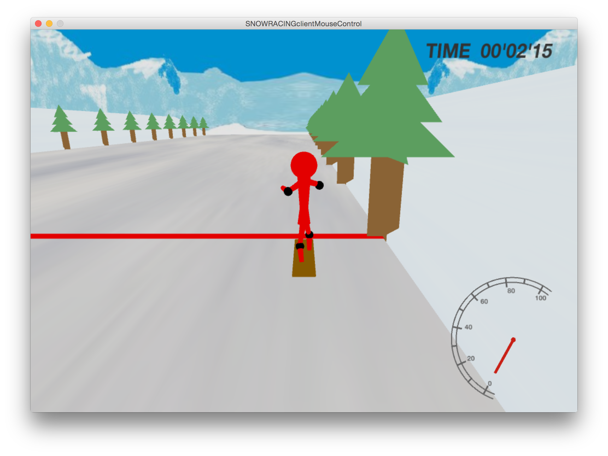
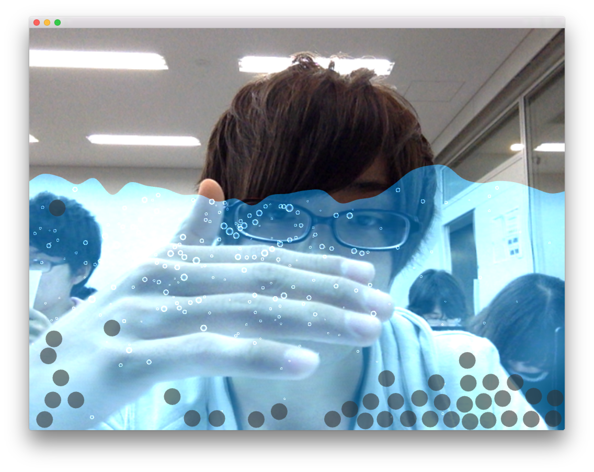
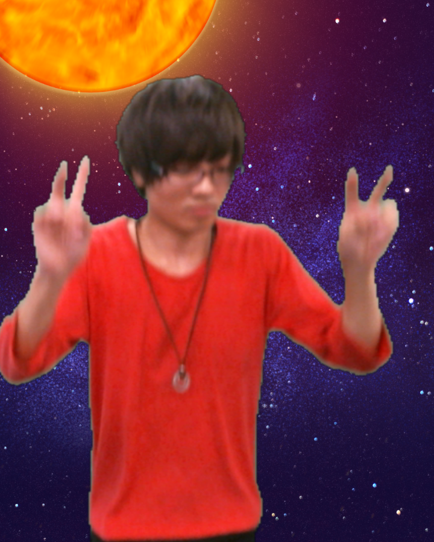

▶︎ - Introduction
▶︎ - Education
| ▽ 入学 | ▽ 卒業 | ▽ 学校名 |
| 2002年4月 | 2008年3月 | 横浜市立一本松小学校 |
| 2008年4月 | 2011年3月 | 横浜市立老松中学校 |
| 2011年4月 | 2014年3月 | 横浜市立桜丘高校 |
| 2014年4月 | 明治大学総合数理学部
先端メディアサイエンス学科 |
▶︎ - Hobby
▷ - 最近の趣味はopneFrameworksを使ってメディアアートや インタラクティブアート作りです。
人の作品を鑑賞するのも好きです。
それ以外はゲームをすることですかね。
特技は夜更かしです。
▶︎ - SNOWRACING
▶︎ - Details
▶︎ - Explanation
1年次のプログラミング演習の最終発表での作品。
サーバーとクライアントをつかい最大12人対戦が可能なレースゲームです。
一つのサーバーに対して複数のクライアントを接続して、
クライアント同士の対戦を可能にしたところ努力しました。
▶︎ - WaterCamera
▶︎ - Details
▶︎ - Explanation
2年次の福地研ゼミでの作品。
カメラを使ったインタラクティブコンテンツです。
人が動くと泡が発生して、また波を触ると波が揺れる。
▶︎ - TrampolineJump
▶︎ - Details
▶︎ - Explanation
2年次の福地研とNAKEDでの共同開発の作品。
トランポリンを使ったインタラクティブコンテンツです。
トランポリンを飛ぶと背景が動き多段ジャンプできる。頂上まで行くと写真が撮れる。